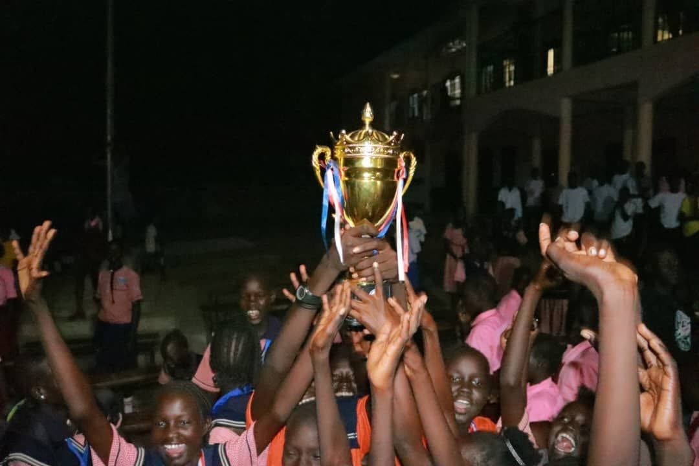
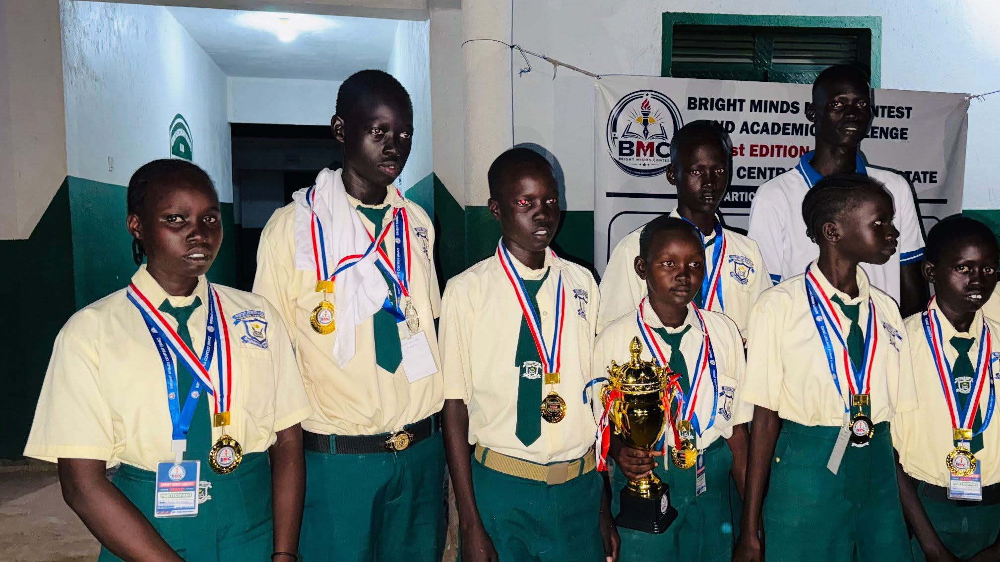
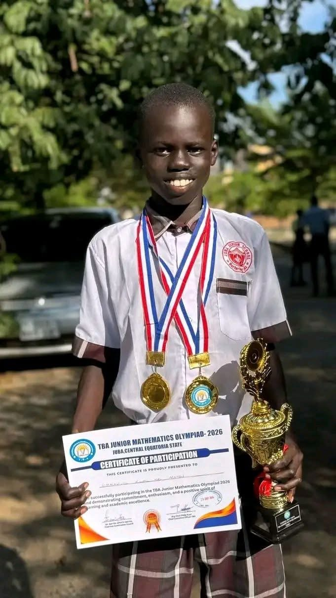
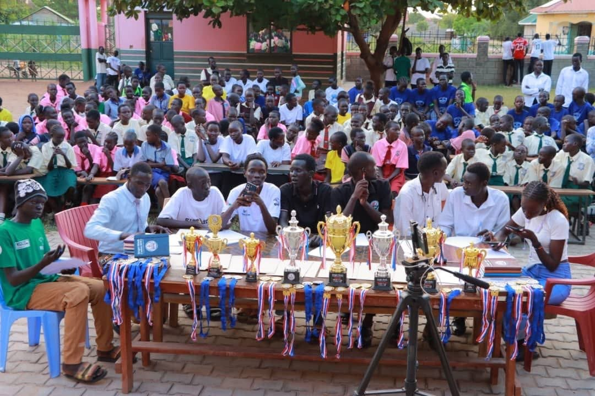
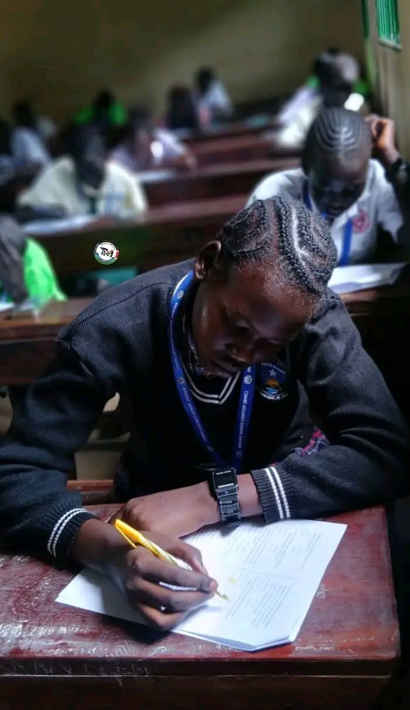
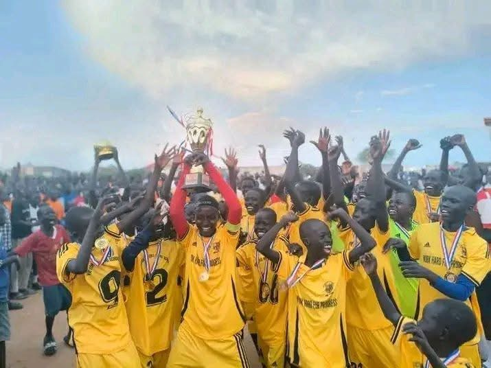
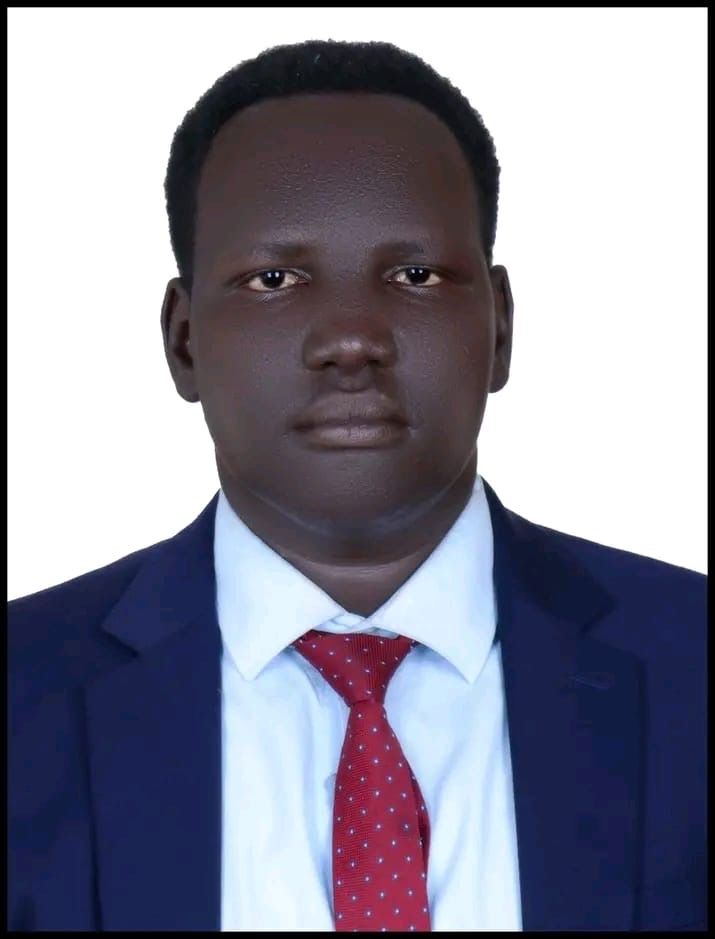
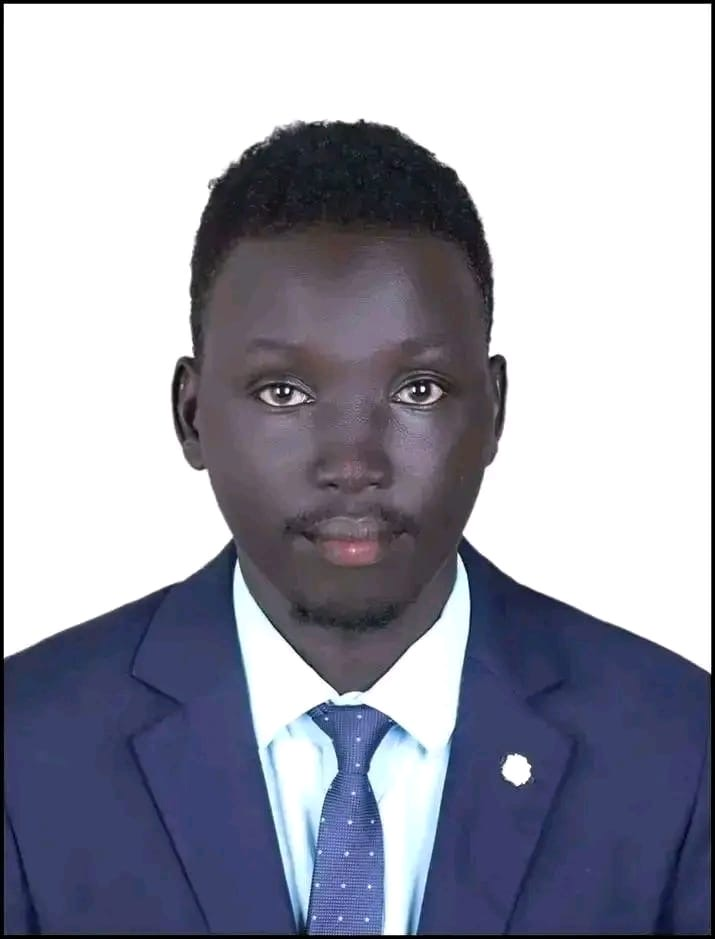

◎
Our Mission
To discover, develop and empower young talents through academic competitions, debate, public speaking, sports and educational opportunities that build confidence, critical thinking, discipline and leadership among young people.
Discover Talent. Inspire Greatness. Build Future Leaders.
Bright Minds Contest (BMC) is a youth development and educational organization based in Juba, South Sudan. We promote academic excellence through debate, public speaking, mathematics contests, academic challenges, mock examinations and sports—empowering learners with confidence, critical thinking, discipline, teamwork and leadership skills.
We bring learners, schools and communities together through meaningful educational, academic and sporting experiences.
To discover, develop and empower young talents through academic competitions, debate, public speaking, sports and educational opportunities that build confidence, critical thinking, discipline and leadership among young people.
To become a leading youth development organization in South Sudan, creating opportunities for every learner to discover their potential, develop their abilities and become a responsible future leader.
Education, youth development, academic competitions, leadership, sports and talent development.
Bright Minds Contest (BMC) is a youth-focused educational and talent development organization based in Juba, Central Equatoria State, Republic of South Sudan. BMC is dedicated to discovering, nurturing and empowering young talents by creating opportunities for learners to demonstrate their abilities, develop essential life skills and achieve academic excellence.
Through academic competitions, debate, public speaking, mathematics contests, academic challenges, mock examinations and sports, BMC provides a platform where learners can challenge themselves, exchange ideas, build confidence and develop the knowledge and skills needed to become responsible future leaders.
We believe every young person has potential worth discovering and developing. Our mission is to make learning more engaging, competitive, inclusive and inspiring by bringing together learners, schools, teachers, mentors, educational institutions and partners who share a commitment to education and youth development.
Beyond competition, BMC promotes critical thinking, creativity, discipline, teamwork, integrity, communication and leadership. We strive to create meaningful educational experiences that encourage learners to go beyond the classroom, discover their strengths, overcome challenges and contribute positively to their communities.
Working with schools, sponsors, donors, development partners and well-wishers, BMC seeks to strengthen educational initiatives, support talented learners and build a generation of confident, knowledgeable, innovative and community-minded young leaders.
Together, we can turn potential into achievement, talent into excellence, and young minds into tomorrow's leaders.
Every program is designed to help learners develop practical skills, discover strengths and grow through healthy competition.

Debate competitions that strengthen critical thinking, research, argumentation, respectful dialogue and rebuttal skills.

Opportunities to build confidence, communication, presentation and leadership skills before an audience.

Mathematics competitions that encourage problem-solving, logical thinking and academic excellence.

Inter-school academic competitions that test learners’ knowledge, teamwork and abilities across subjects.

Examination preparation and assessment that helps learners understand their progress and identify areas for improvement.

Sports competitions that promote teamwork, discipline, physical activity and unity among schools.
Take part: Event dates, participation requirements and registration details will be published here as they become available. Schools and learners can contact BMC to express interest.
Get in touch →These principles guide how we work with learners, schools, partners and communities.
Encouraging learners to achieve their best.
Promoting honesty, fairness and accountability.
Working toward opportunities for learners from different schools and communities.
Encouraging creativity, critical thinking and new ideas.
Preparing young people to take responsibility and serve their communities.
Building cooperation among learners, teachers, schools and partners.
Promoting commitment, preparation and respect.
Committed to growing opportunities and building a strong foundation for young talent.

Chief Executive Officer (CEO)
Vision • Strategy • Partnerships
General Manager
Operations • Programs • CoordinationThe leadership team of Bright Minds Contest is committed to promoting academic excellence, discovering young talent, developing leadership skills and creating educational opportunities for learners across South Sudan.
Through teamwork, accountability, integrity and innovation, BMC aims to strengthen its programs and build meaningful partnerships with schools, donors and educational institutions.
It is my pleasure to welcome you to Bright Minds Contest (BMC), an organization committed to discovering talent, inspiring greatness and building future leaders in South Sudan.
We believe every learner has potential worth nurturing. Through debate, public speaking, mathematics contests, academic challenges, mock examinations and sports, we aim to create opportunities for young people to grow in knowledge, confidence, discipline and leadership.
As we move forward, we invite schools, teachers, parents, partners, donors and well-wishers to join us in this important mission. Together, we can help young people develop their abilities and contribute positively to their communities and our country.
Thank you for believing in the promise of our young people.
A simple planning dashboard for tracking activities and organizational progress.
Illustrative values only—not verified results or participant statistics.
Enter an event or activity to update the dashboard in this browser session. For permanent, shared reporting, connect the form to a secure database or website backend.
Across South Sudan, young learners have talents, dreams and ambitions. Many need more opportunities to practise their skills, participate in academic competitions, receive mentorship and discover what they are capable of achieving.
Bright Minds Contest wants to help create those opportunities. Through debate, public speaking, mathematics competitions, academic challenges, mock examinations and sports, BMC brings learners together to learn, compete and grow.
Expanding these opportunities requires resources, equipment, training, transportation, educational materials and support from people and organizations that believe in young people’s potential.
You can be part of this mission.
Let’s make an impact →Interested in registering a school, volunteering, partnering or supporting a program? Reach out to the BMC team.
Juba, Central Equatoria State, South Sudan
Republic of South Sudan
Use the WhatsApp contact button to reach the organization.
Discover talent. Inspire greatness. Build future leaders.
☏ Contact BMC on WhatsAppBefore publishing, set BMC’s official WhatsApp number inscript.js.